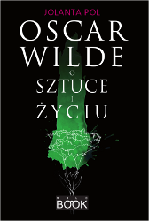

Oscar Wilde w anegdotach
Książka Oscar Wilde o sztuce i życiu jest próbą przybliżenia refleksji Wilde’a o sztuce i życiu, ukazania ich aktualności, głębi, uniwersalnej wartości.
W pierwszej części zostały wybrane i uporządkowane tematycznie jego wypowiedzi na temat sztuki i życia (podano je w języku angielskim i polskim tłumaczeniu). Część druga to omówienie problematyki zawartej w tych sądach. Appendix zawiera m.in. szczegółowe kalendarium, informacje dotyczące adaptacji utworów oraz opinie znanych postaci odnoszące się do Wilde’a bądź jego twórczości.
Kontakt i zamówienia: mywildbook@gmail.com
 Wydawnictwo: WILDBOOK
Rok wydania: 2010
Oprawa: twarda
Format: 205 × 145
Liczba stron: 224
Cena: 42 zł
ISBN: 978-83-930701-0-7
OSCAR WILDE

Oscar Wilde (1882), fot. Napoleon Sarony, źródło: Wikimedia Commons (modyfikacja własna)
Cechą zaprezentowanych anegdot jest oczywiście humor, ale humor wyjątkowo aforystyczny, oparty na paradoksach i antytezach. One bowiem stanowią istotę życia i twórczości Oscara Wilde’a – artysty, który nie przystaje do żadnych schematów, łamie konwencje, ukazuje niejednoznaczność, złożoność rzeczywistości, podważa bezrefleksyjnie powtarzane banalne sądy.
Czytelnicy, a niejednokrotnie też wytrawni krytycy, często formułują opinie dalekie od przekonań Wilde’a, gdyż jego szokujące paradoksy zawierają sądy pozornie się wykluczające. Wilde z przeciwieństw tworzy jednak wypowiedź spójną i udowadnia, że „tylko teorie niebezpieczne mają wartość intelektualną”. Jego wypowiedzi są formą prowokacji, uwydatniają uproszczenia w poglądach ogólnie przyjętych i bezkrytycznie przyjmowanych przez większość ludzi, skłaniają do myślenia, analizy, odrzucania stereotypów, poszukiwania własnej indywidualności, gloryfikują wolność.
Wilde był obdarzony wyjątkowym poczuciem humoru, kochał piękno, emanował optymizmem i pogodą ducha, a jednocześnie głęboko odczuwał tragizm życia. Zarzucano mu amoralizm, a on gloryfikował dobro. Pisał, że „serce z kamienia to zło życia i sztuki”. Cechowała go wyjątkowa empatia, wrażliwość na cierpienie i ból, zarówno ludzi mu bliskich, jak i obcych. Z pozoru sceptyk i relatywista, był moralistą, obrońcą zasad etycznych, a jego – niegdyś gorszące – dzieła można odczytać jako przypowieści moralne. Bliskie było mu hasło „sztuki dla sztuki”, gloryfikował piękno, oryginalność i nowatorstwo, ale równocześnie krytykował pusty estetyzm, tworzył tradycyjne fabuły, teatr konwersacyjny, w którym dominuje intelektualny dialog, nie rezygnował z klasycznych schematów gatunkowych, stosował realistyczne obrazowanie.
Wilde chciał tworzyć życie wedle praw sztuki, uczynić je pięknym. Kreował sytuacje i własne zachowania, w czym pomagała mu niezwykła wyobraźnia. Ta sztuka życia tworzona była – wedle jego słów – jedynie dla przyjemności i radości twórcy. Warto dodać, że z pewnością też – odbiorcy. Mówił w sposób porywający, mistrzowsko improwizował. Swoje historie, aforyzmy, paradoksy powtarzał, wciąż je zmieniając – udoskonalał je tak, aby potęgować wywierane na odbiorcach wrażenie.
I wciąż zaskakuje, zdumiewa, demaskuje komunały, poszerza granice postrzegania rzeczywistości. Niejednokrotnie bywa traktowany jako pisarz anachroniczny, a zarazem nieustająco i w znacznym stopniu wpływa na światową kulturę, jest czytany i uważany za jednego z najwybitniejszych autorów anglojęzycznych.
Anegdoty zostały opracowane na podstawie:
- Trevor Fisher, Oskar Wilde i Bosie. Fatalna namiętność, tłum. Irena Stąpor, Wydawnictwo Książkowe Twój Styl, Warszawa 2004.
- Nic nie mogło być inaczej. Listy Oskara Wilde’a, tłum. i oprac. Danuta Piestrzyńska, Wydawnictwo Książkowe Twój Styl, Warszawa 2005.
- Jan Parandowski, Król życia, Iskry, Warszawa 1984.
- Henry Pearson, Oskar Wilde, tłum. Jadwiga Dmochowska, PIW, Warszawa 1953.
- Jolanta Pol, Oscar Wilde o sztuce i życiu, tłum. Jolanta i Krzysztof Pol, WILDBOOK, Łódź 2010.
- Oskar Wilde, Portret Doriana Graya, tłum. Maria Feldmanowa, Siedmioróg, Wrocław 1997.
Wypowiedzi Wilde’a w wielu przypadkach zostały dostosowane do formy anegdoty, ale sens jego słów nie uległ zmianie.